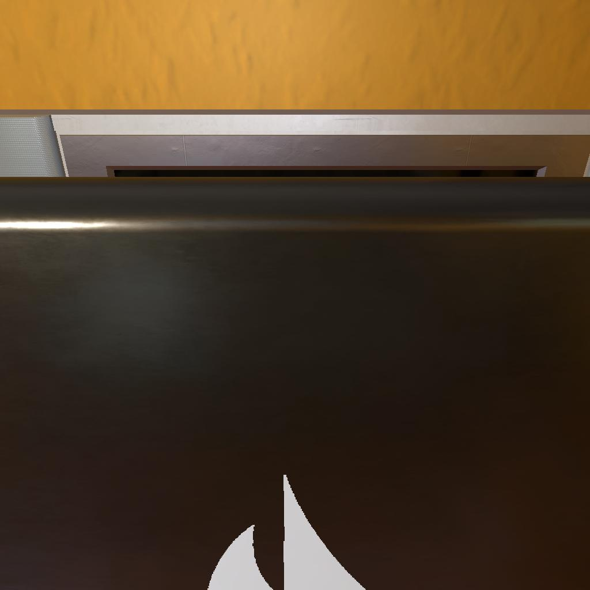

---------------------------------------------------------task: 3---------------------------------------------------------
--------------------------------------------------------------------------------------------------------------------------------------------------------------------
--------------------------------------------------------------------------------------------------------------------------------------------------------------------
Step:--------------------------------------------------------------------------16-------------------------------------------------------------------------------
----------------------------------------
VLM Prompt:
**Task**
Please perform as an embodied AI agent. Our final objective is to examine the plate with the floorlamp. Below is the plan for completing the task, the current observation, alongside historical data and admissible actions for the next step. Please determine the best action for the next step!
**Plan**
Below is a detailed step-by-step plan to complete the task.
1. Find a credit card.
2. Pick up the credit card.
3. Locate an armchair.
4. Place the picked-up credit card on the armchair.
5. Find another credit card.
6. Pick up the second credit card.
7. Return to the same armchair where the first credit card was placed.
8. Place the second credit card on the armchair beside the first credit card.
9. Find a plate.
10. Pick up the plate.
11. Locate a floorlamp.
12. Turn on the floorlamp.
13. Examine the plate under the light of the floorlamp.
**Current Observation**
Displayed is an image capturing the current position of the agent.
**History Information**
Displayed are the previous observations with their corresponding actions.
Current State 2:
1. Place: TV stand with a glass surface
2. Step Index in Plan: 1
3. Objects: Red credit card
4. Action: Go to coffee table 1
Current State 3:
1. Place: Coffee table 1
2. Step Index in Plan: 2
3. Objects: Credit card, plate
4. Action: Take laptop 1 from coffee table 1
Current State 5:
1. Place: Unspecified
2. Step Index in Plan: 3
3. Objects: Armchair
4. Action: Go to armchair 1
Current State 6:
1. Place: Unspecified
2. Step Index in Plan: 4
3. Objects: Credit card, laptop 1, armchair 1
4. Action: Put laptop 1 in/on armchair 1
Current State 7:
1. Place: armchair 1
2. Step Index in Plan: 5
3. Objects: None relevant to the current task
4. Action: go to coffeetable 1
Current State 9:
1. Place: armchair
2. Step Index in Plan: 5
3. Objects: None visible
4. Action: go to tvstand 1
Current State 10:
1. Place: TV stand
2. Step Index in Plan: 5
3. Objects: None visible
4. Action: Go to armchair 1
Current State 11:
1. Place: Unspecified (current observation does not match armchair 1)
2. Step Index in Plan: 5
3. Objects: None observed (no credit cards or relevant objects to the task)
4. Action: Go to shelf 1
Current State 12:
1. Place: Unspecified (observation does not match the "shelf 1" location)
2. Step Index in Plan: 5
3. Objects: None observed relevant to the task
4. Action: go to drawer 1
Current State 13:
1. Place: Unspecified
2. Step Index in Plan: 5
3. Objects: None observed
4. Action: go to shelf 2
Current State 14:
1. Place: Unspecified (view of a wall or cabinet)
2. Step Index in Plan: 5
3. Objects: None observed
4. Action: Go to shelf 3
Current State 15:
1. Place: Unspecified
2. Step Index in Plan: 5
3. Objects: None observed
4. Action: Go to coffeetable 1
Current State 16:
1. Place: Back of an armchair
2. Step Index in Plan: 5
3. Objects: No relevant objects
4. Action: Go to tvstand 1
**Admissible Actions**
(1): go to armchair 1
(2): go to garbagecan 1
(3): go to shelf 1
(4): go to shelf 2
(5): go to sofa 1
(6): go to sidetable 1
(7): go to sidetable 2
(8): go to drawer 1
(9): go to shelf 4
(10): go to shelf 5
(11): put laptop 1 in/on tvstand 1
(12): examine laptop 1
**Analysis Guideline**
1. Analyze the **History Information** and determine our current step in the plan and our current place.
2. List all visible objects related to the task in the current observation.
3. Analyze the objects in the current observation based on the history and the requirements for the current step, and then determine if we can complete the step with the current observation.
4. Analyze and decide on the most appropriate action to take.
5. Summarize the analysis using the following format: "Analysis: [The summarization of the analysis], The Most Appropriate Action: (i which is the integer.): [Selected action]"
**Notes**
1. We must complete each step of the plan in order and cannot skip steps when the previous ones are not finished.
2. For "Go to" actions listed as "go to xxx [n]", interpret this as there are n distinct actions available: "go to xxx 1", "go to xxx 2", ..., "go to xxx n". Select one specific action from these options instead of using "go to xxx [n]".
3. If receptacles such as drawers, cabinets, and so forth are closed in the current observation, we may try to open them.
4. Pay attention to synonyms and ensure clarity in the terms used.
5. If there is no history available, we are at the first step and the current place is "Unknown".
6. The most appropriate action must be in the **Admissible Actions**, and we cannot generate a new action that is not in the **Admissible Actions**.
**Answer**
Please select the most suitable action by following the **Analysis Guideline**, keeping the above **Notes** in mind.
----------------------------------------
----------------------------------------
VLM Response:
Analysis: Based on the history information, we are currently at step 5 in the plan, which is to find another credit card. The current observation does not show any objects related to the task, such as a credit card. The history indicates that the agent has been moving around different locations (tv stand, shelves, coffee tables, and armchair) looking for the second credit card but has not found it yet. Since the current observation shows the back of an armchair and no relevant objects are visible, we cannot complete the current step with this observation. Therefore, the most appropriate action would be to move to another location where the credit card might be found.
The Most Appropriate Action: (3): go to shelf 1
----------------------------------------
----------------------------------------
>>> Refine VLM Response and Get Pure Action: go to shelf 1
----------------------------------------
-----------------------------------------------------------------
Running time: 8.599534034729004 seconds
Total Money: 1.20047
-----------------------------------------------------------------
-----------------------------------------------------------------
Summarization Prompt:
**Context**
Analysis: Based on the history information, we are currently at step 5 in the plan, which is to find another credit card. The current observation does not show any objects related to the task, such as a credit card. The history indicates that the agent has been moving around different locations (tv stand, shelves, coffee tables, and armchair) looking for the second credit card but has not found it yet. Since the current observation shows the back of an armchair and no relevant objects are visible, we cannot complete the current step with this observation. Therefore, the most appropriate action would be to move to another location where the credit card might be found.
The Most Appropriate Action: (3): go to shelf 1
**Summary Format**
1. Place: [Specify the current location]
2. Step Index in Plan: [Dispkay the current step number in the plan before taking the current action]
3. Objects: [List the objects relevant to the task]
4. Action: [Describe the most appropriate action without the "(x)" and keep the integer of the object]
Please analyze the **Context** and summarize the analysis using the **Summary Format**.
-----------------------------------------------------------------
-----------------------------------------------------------------
Summarization Response:
1. Place: Back of an armchair
2. Step Index in Plan: 5
3. Objects: None
4. Action: Go to shelf 1
-----------------------------------------------------------------
-----------------------------------------------------------------
Text Observation:You arrive at loc 3. On the shelf 1, you see a television 1.
-----------------------------------------------------------------
UNSUCCEED